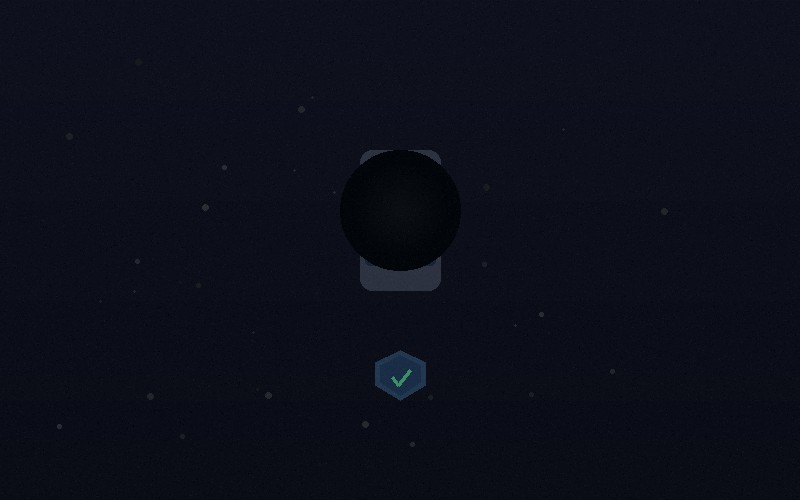

How to Verify a Private Investigator's License in Louisiana
Louisiana requires all PIs to hold an active LSBPIE license. Learn how to check credentials before hiring and what red flags to watch for.
Read MoreGuides and insights on private investigation services, Louisiana laws, and what to know before hiring a licensed investigator in the Metairie area.
Louisiana requires all PIs to hold an active LSBPIE license. Learn how to check credentials before hiring and what red flags to watch for.
Read More
Louisiana is a one-party consent state under R.S. 15:1303. Learn what this means for investigations and what recordings are still off-limits.
Read More
A realistic overview of how infidelity investigations work in Louisiana — process, timelines, costs, and the type of evidence a licensed PI can gather.
Read More
In contested custody disputes, a PI can document parenting behavior and living conditions. Find out how these investigations work in Jefferson Parish family courts.
Read More
OSINT allows licensed investigators to legally uncover a surprising amount from public records, social media, and online databases. Learn what's possible.
Read More
PI fees in the Metairie and New Orleans area range from $85–$150/hr. This guide covers hourly rates, retainers, flat fees, and what affects total cost.
Read More
Louisiana law (R.S. 14:323) makes GPS tracking without consent unlawful. Learn what this means for private investigators in Metairie and Jefferson Parish.
Read More
Skip tracing is the process of locating a hard-to-find person using public records and investigative databases. Learn how licensed PIs in Metairie do it.
Read More
Licensed PIs in Louisiana help document fraudulent claims through covert surveillance and activity monitoring. Learn how insurance fraud investigations work.
Read More
Louisiana PIs must follow strict surveillance laws. Learn what is legal — and what is completely off-limits — when conducting surveillance in Metairie.
Read More
Licensed PI background checks go far beyond consumer websites. Learn what a professional investigation uncovers and when a thorough check is worth the cost.
Read More
When a loved one goes missing, a licensed PI can work alongside law enforcement to accelerate the search. Learn how missing person investigations work in Louisiana.
Read More
Licensed PIs help Metairie businesses investigate employee theft, workers' comp fraud, and misconduct. Learn how corporate investigations work in Louisiana.
Read More
Louisiana attorneys regularly partner with licensed PIs for witness location, evidence gathering, and trial preparation. Learn how PIs support legal cases.
Read More
Ready to hire a PI? This step-by-step guide covers finding a licensed investigator, what to bring to your consultation, and what to expect throughout the process.
Read MoreGet connected with an experienced, licensed PI serving Metairie, Jefferson Parish, and the greater New Orleans area. Confidential consultations are available.